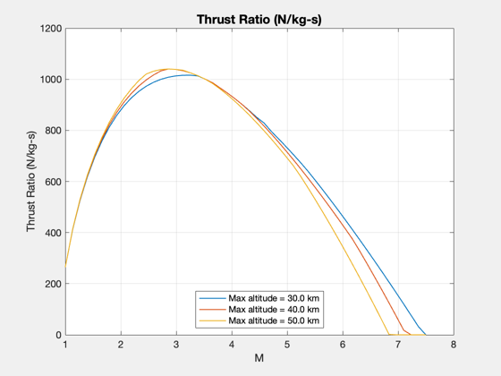
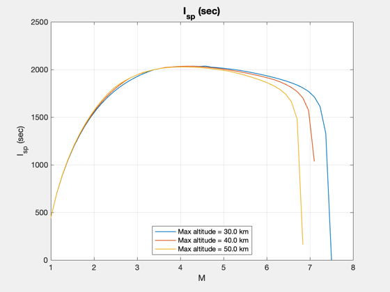

Demonstrate a ramjet.
Shows specific impulse and thrust ratio as a function of Mach number. Each line in the plot is for velocities from Mach 1 to Mach 4.5 and for a different altitude profile. This model includes non-ideal pressure ratios for the diffuser, nozzle and combustor. ------------------------------------------------------------------------ See also StdAtm, Plot2D, Ramjet, UE ------------------------------------------------------------------------
Contents
%-------------------------------------------------------------------------- % Copyright (c) 2007 Princeton Satellite Systems, Inc. All rights % reserved. %--------------------------------------------------------------------------
Engine parameters
%------------------ clear d; clear M; clear iSp; clear thR; d.gamma = 1.4; % Airflow ratio of specific heats d.etaB = 1.0; % Combustion efficiency d.qR = 42800000; % Joules/kg for the fuel d.t04 = 2777; % Combustor temperature (deg-K) d.cP = 1004; % Air specific heat d.pEOverPA = 1.0; % Ratio of exit pressure to atmospheric pressure d.aI = 1.0; % Inlet area d.rD = 0.7; % Diffuser pressure ratio d.rC = 0.97; % Combustor pressure ratio d.rN = 0.96; % Nozzle pressure ratio d.aE = 1.0; % Exit area
Do each altitude profile
%------------------------- hFinal = [30 40 50]*1000; n = size(hFinal,2); m = 50; l = cell(1,n); machNo = linspace(1,7.5,m); thR = zeros(n,m); iSp = zeros(n,m); M = zeros(n,m); for k = 1:n h = linspace(0,hFinal(k),m); p = StdAtm( h ); [t, tSFC, uE, f, iSp(k,:), thR(k,:)] = Ramjet( machNo, d, p ); M(k,:) = machNo; l{k} = sprintf('Max altitude = %3.1f km',hFinal(k)/1000); end Plot2D( M, thR, 'M', 'Thrust Ratio (N/kg-s)' ); legend(l,'location','south') Plot2D( M, iSp, 'M', 'I_{sp} (sec)' ); legend(l,'location','south') %-------------------------------------- % $Id: 4c1e935a050b72b3dcf945a7a0008af85f153d4f $ 